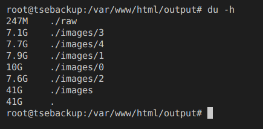

Cómo descargué todos los datos de las elecciones de mi país usando Python (y cómo puedes hacerlo tú)

Resumen por si no quieres leer todo y únicamente quieres ver cómo lo hice:
- Link al repositorio con mi código, donde adjunto una guía de instalación si tú quieres hacer lo mismo: Repo en GitHub.
- Un archivo JSON con todos los datos, por si tú quieres realizar tu propio análisis: Descargar.
- Un archivo en CSV con los resultados de las elecciones presidenciables en cada una de las 21099 mesas electorales: Descargar.
El pasado 16 de junio se celebraron las elecciones generales en mi país. En cuanto empezó el conteo de votos expresé mi molestia en twitter sobre la pésima calidad de la página creada por el Tribunal Supremo Electoral (TSE) para consultar los resultados. Teniendo en cuenta que su página no tenía ninguna medida de seguridad y que no confío mucho que digamos en el TSE, decidí descargar todos los datos para realizar mi propio análisis. En este post te explico rápidamente cómo lo hice.
Empecemos por analizar cómo funciona la página de resultados. Una simple inspección en la página en la sección “Red” te mostrará que está desarrollada en PHP. Cada vez que realizas una consulta para ver un tipo de resultado se envía una petición al backend con los parámetros de la solicitud. Estos parámetros incluyen:
d: Departamento: el código del departamento (estado o región en otros países) a consultar. Como se muestra en la imagen, el departamento número0indica que se debe ignorar este filtro.m: Municipio: el código del municipio (ciudad en otros países). El filtro utiliza el0en la misma forma que el departamento.te: Tipo de elección: el tipo de elección con el código1indica que es la elección para presidente, el2la de diputados (congresistas) por listado nacional, el3diputados departamentales, el4la de alcaldes municipales y el5la de diputados al Parlamento Centroamericano. (Si te causa alguna inquietud que en Guatemala se elijan tantos cargos públicos al mismo tiempo, déjame compartir que a mí también).vista: Tipo de vista: existen dos tipos de consultas que se pueden realizar. La primera es de resultados (RESULTADO), donde puedes ver el resumen de la cantidad de votos que obtuvo cada candidato. La segunda (MESA) es mucho más interesante. Permite consultar el detalle de cada mesa electoral ingresando el identificador de ésta.token: Un token de seguridad que permite garantizar el origen de la solicitud. Tendré mucho más de qué hablar sobre este token dentro de poco.
El TSE tuvo a bien ordenar los resultados en formato JSON sin ningún tipo de encriptación (si lo hicieron por simplicidad, por contribuir a los datos abiertos o por falta de capacidad, lo dejo a tu discreción). Revisé la estructura de la respuesta del servidor para una solicitud al tipo de vista MESA y encontré que era muy fácil de entender:
- Existe un listado que contiene los resultados de cada tipo de elección.
- Debido a que hay tipos de elecciones con una cantidad variable de candidatos (por ejemplo, un partido político pudo haber postulado a alguien para presidente pero no para alcalde de una ciudad específica), cada tipo de elección tiene un listado de registros con los votos estructurados como muestra la imagen próxima.
- Cada tipo de elección contiene un resumen de los datos de su mesa electoral para ese tipo en específico. Este resumen incluye datos como la cantidad de votos válidos, nulos e inválidos, un link a una foto del acta sobre los resultados de la mesa, la cantidad de papeletas disponibles y… ¡¿un campo que indica si los datos del conteo de votos cuadran o no?!.
Me llamó mucho la atención que existiera este campo. ¿Por qué habríamos de suponer que los votos no cuadren? En ese momento supe que tenía que descargar todos los datos y comparar yo mismo que fueran reales. Imaginé que sería fácil hacer algo así utilizando Python, pero seguramente el token de seguridad estaría ligado a una sesión específica o tendría un tiempo de expiración muy corto. En cualquier caso, nada costaría probar para saber qué tipo de seguridad utiliza el token. Utilicé el paquete de Python requests para hacer solicitudes de forma fácil a cualquier URL.
Y ¡vaya sorpresa! El token no valida prácticamente nada. Esperé un tiempo para volver a utilizarlo y seguía funcionando. Incluso probé el mismo token en otra máquina y aún tenía éxito. Esto da luz verde para generar un script que descargue y organice todos los datos.
Creación del script de Python
Empecé por utilizar un ambiente virtual de Python manejado por Pipenv. Si no tienes experiencia en ello, su página web es una muy buena referencia del uso. No necesitaremos ninguna otra dependencia externa para descargar los datos.
Como mostré anteriormente, realizar una solicitud es bastante simple:
# importar el paquete
import requests
# crear el objeto de la solicitud
r = requests.get(url)
# convertir el json de la respuesta en una estructura de Python como listas o diccionarios
r.json()
Utilizando este código, es bastante sencillo crear una función que me permita obtener los datos de una mesa específica:
url = 'https://resultados2019.tse.org.gt/201901/api.php'
token = ''
def query_api(num):
params = {'token': token, 'mesa': num, 'vista': 'MESA'}
query_url = f'{url}?token={params["token"]}&mesa={params["mesa"]}&vista={params["vista"]}'
r = requests.get(url=query_url, data=params)
data = r.json()
Algo que he aprendido tras varios años de hacer web scraping, es que no puedes confiar en que una solicitud larga se mantenga abierta por mucho tiempo. Debes guardar tu trabajo seguido por si hay algún problema con el servidor a donde te conectes. Por esta razón, voy a generar un archivo único por cada mesa. Si el proceso falla en la mesa número 15321, al menos tendré el resto almacenado. Para ello, vamos a exportar los datos con:
import json
with open(f'carpeta_data/{num}.json', 'w', encoding='utf-8') as outfile:
json.dump(data, outfile, ensure_ascii=False, indent=2)
Podríamos dejarlo hasta ahí, pero en serio no confío mucho que digamos en mi gobierno, por lo que decidí que también sería bueno descargar las imágenes contenidas en la URL de cada registro. Para ello, vamos a utilizar:
import shutil
# recorremos cada uno de los tipos de elección en esa mesa
for i, te in enumerate(data['TE']):
folder = f'carpeta_imagenes/{i}'
# obtener el tipo de extensión de la imagen
extension = te['IMGSRC'].split('.')[-1]
# consultar la URL de la imagen
response = requests.get(te['IMGSRC'], stream=True)
with open(f'carpeta_imagenes/{i}/{num}.{extension}', 'wb') as out_file:
shutil.copyfileobj(response.raw, out_file)
del response
Por lo tanto, el método final queda de la siguiente manera:
url = 'https://resultados2019.tse.org.gt/201901/api.php'
# obtén tu propio token desde la página del TSE
token = ''
# la carpeta donde desees guardar los datos
output_folder_raw = ''
# la carpeta donde quieras guardar las imágenes
# dentro de esta carpeta debes generar otras 5 llamadas 0, 1, 2, 3, y 4
output_folder_images = ''
def query_api(num):
params = {'token': token, 'mesa': num, 'vista': 'MESA'}
query_url = f'{url}?token={params["token"]}&mesa={params["mesa"]}&vista={params["vista"]}'
print(f'Consulting... : {num}')
r = requests.get(url=query_url, data=params)
data = r.json()
with open(f'{output_folder_raw}/{num}.json', 'w', encoding='utf-8') as outfile:
json.dump(data, outfile, ensure_ascii=False, indent=2)
try:
for i, te in enumerate(data['TE']):
folder = f'{output_folder_images}/{i}'
extension = te['IMGSRC'].split('.')[-1]
# puse esta validacion para consultar unicamente si el archivo no existe
if f'{num}.{extension}' not in os.listdir(folder):
response = requests.get(te['IMGSRC'], stream=True)
with open(f'{output_folder_images}/{i}/{num}.{extension}', 'wb') as out_file:
shutil.copyfileobj(response.raw, out_file)
del response
except KeyError:
pass
print(f'Done with {num}')
Hasta aquí todo bastante bien, podemos ejecutar esta función dentro de un ciclo para realizar la consulta de todas las mesas. Sin embargo, este proceso tardaría mucho tiempo puesto que se debería esperar a que cada mesa descargue sus datos para empezar con la siguiente. Para evitar este inconveniente utilizaremos la siempre útil ejecución en paralelo. Ya que explicar cómo funciona este método es algo que supera el alcance de este post, simplemente te explicaré cómo funcionan las partes clave:
# la función que contiene la secuencia de órdenes asíncronas
async def main():
starting = 1
ending = 21100
# aquí le decimos que queremos utilizar 8 hilos al mismo tiempo
with concurrent.futures.ThreadPoolExecutor(max_workers=8) as executor:
# obtenemos el ciclo de eventos de nuestro gestor asíncrono
loop = asyncio.get_event_loop()
# parámetros para la función a ejecutar en el ciclo de eventos
futures = [
loop.run_in_executor(
executor,
query_api,
i
)
for i in range(starting, ending)
]
# ejecutamos la función en un ciclo sin esperar al resultado de cada repetición para continuar
for response in await asyncio.gather(*futures):
pass
loop = asyncio.get_event_loop()
loop.run_until_complete(main())
¡Y eso es todo! Ahora podemos ejecutar nuestro archivo desde la línea de comandos y esperar… Esperar un buen rato. Curiosamente, de vez en cuando alguna de las solicitudes puede llegar a ser rechazada, por lo que tendrás que esperar a que termine y ejecutar de nuevo el comando. Encontré una solución simple a no tener que hacer solicitudes dos veces, que puedes consultar en el archivo completo en GitHub. Esta solución utiliza el paquete NumPy, por lo quizas quieras revisar la descripción del repositorio antes de ejecutarlo.
Resultados finales
Después de correr el script con 1500 registros me di cuenta de que mi humilde computadora no sería suficiente para soportar la carga de trabajo, por lo que decidí adquirir un servidor básico en la nube donde pudiera ejecutarlo con confianza. Después de unas dos horas de trabajo, los resultados fueron:
- 41 GB de fotos descargadas
- 105037 fotos de actas descargadas
- 247 MB de archivos JSON
- 21099 archivos JSON con los resultados de las papeletas
Estoy trabajando en el análisis de datos utilizando Pandas y Bokeh para crear una visualización útil sobre los datos. Así que no olvides seguirme en Twitter para saber cuando esté lista.
Gracias a David, Hans, Carlos y Kwai por ayudarme a terminar este proyecto y editar este post.